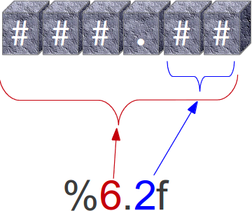
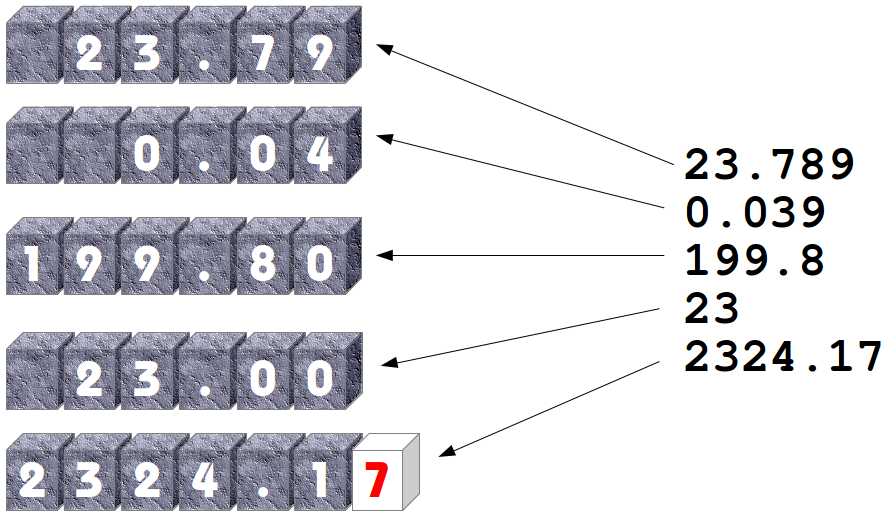

Formatted Output
Three Ways for a Nicer Output
In this chapter of our Python tutorial we will have a closer look at the various ways of creating nicer output in Python. We present all the different ways, but we recommend that you should use the format method of the string class, which you will find at end of the chapter. "string format" is by far the most flexible and Pythonic approach.
So far we have used the print function in two ways, when we had to print out more than two values:
- The easiest way, but not the most elegant one:
We used print with a comma separated list of values to print out the results, as we can see in the following example. All the values are separated by blanks, which is the default behaviour. We can change the default value to an arbitrary string, if we assign this string to the keyword parameter "sep" of the print function:>>> q = 459 >>> p = 0.098 >>> print(q, p, p * q) 459 0.098 44.982 >>> print(q, p, p * q, sep=",") 459,0.098,44.982 >>> print(q, p, p * q, sep=" :-) ") 459 :-) 0.098 :-) 44.982 >>>
- Alternatively, we can construe out of the values a new string by using the string concatenation operator:
>>> print(str(q) + " " + str(p) + " " + str(p * q)) 459 0.098 44.982 >>>
The second method is inferior to the first one in this example.
The Old Way or the non-existing printf and sprintf
Is there a printf in Python? A burning question for Python newbies coming from C, Perl, Bash or other programming languages who have this statement or function. To answer that Python has a print function and no printf function is only one side of the coin or half of the truth. One can go as far as to say that this answer is not true. So there is a "printf" in Python? No, but the functionality of the "ancient" printf is contained in Python. To this purpose the modulo operator "%" is overloaded by the string class to perform string formatting. Therefore, it is often called string modulo (or somethimes even called modulus) operator, though it has not a lot in common with the actual modulo calculation on numbers. Another term for it is "string interpolation", because it interpolates various class types (like int, float and so on) into a formatted string. In many cases the string created via the string interpolation mechanism is used for outputting values in a special way. But it can also be used for example to create the right format to put the data into a data base.
Since Python 2.6 has been introduced, the string method format should be used instead of this old-style formatting. Unfortunately, string modulo "%" is still available in Python3 and what is even worse, it is still widely used. That's why we cover it in great detail in this tutorial. You should be capable of understanding it, when you encounter it in some Python code. But it is very likely, that one day this old style of formatting will be removed from the language. So you should get used to str.format().
The following diagram depicts how the string modulo operator works:

On the left side of the "string modulo operator" is the so-called format string and on the right side is a tuple with the content, which is interpolated in the format string. The values can be literals, variables or arbitrary arithmetic expressions.
 The format string contains placeholders. There are two of those in our example: "%5d" and "%8.2f".
The format string contains placeholders. There are two of those in our example: "%5d" and "%8.2f".
The general syntax for a format placeholder is
%[flags][width][.precision]type
 Let's have a look at the placeholders in our example. The second one "%8.2f" is a format description for a float number. Like other placeholders, it is introduced with the "%" character. This is followed by the total number of digits the string should contain. This number includes the decimal point and all the digits, i.e. before and after the decimal point. Our float number 59.058 has to be formatted with 8 characters. The decimal part of the number or the precion is set to 2, i.e. the number following the "." in our placeholder. Finally, the last character "f" of our placeholder stands for "float".
If you look at the output, you will notice that the 3 decimal digits have been rounded. Furthermore, the number has been preceded in the output with 3 leading blanks.
The first placeholder "%5d" is used for the first component of our tuple, i.e. the integer 453. The number will be printed with 5 characters. As 453 consists only of 3 digits, the output is padded with 2 leading blanks. You may have expected a "%5i" instead of "%5d". Where is the difference? It's easy: There is no difference between "d" and "i" both are used for formatting integers. The advantage or beauty of a formatted output can only be seen, if more than one line is printed with the same pattern. In the following picture you can see, how it looks, if 5 float numbers are printed with the placeholder "%6.2f" are printed insubsequent lines:

| Conversion | Meaning |
|---|---|
| d | Signed integer decimal. |
| i | Signed integer decimal. |
| o | Unsigned octal. |
| u | Unsigned decimal. |
| x | Unsigned hexadecimal (lowercase). |
| X | Unsigned hexadecimal (uppercase). |
| e | Floating point exponential format (lowercase). |
| E | Floating point exponential format (uppercase). |
| f | Floating point decimal format. |
| F | Floating point decimal format. |
| g | Same as "e" if exponent is greater than -4 or less than precision, "f" otherwise. |
| G | Same as "E" if exponent is greater than -4 or less than precision, "F" otherwise. |
| c | Single character (accepts integer or single character string). |
| r | String (converts any python object using repr()). |
| s | String (converts any python object using str()). |
| % | No argument is converted, results in a "%" character in the result. |
The following examples show some example cases of the conversion rules from the table above:
>>> print("%10.3e"% (356.08977))
3.561e+02
>>> print("%10.3E"% (356.08977))
3.561E+02
>>> print("%10o"% (25))
31
>>> print("%10.3o"% (25))
031
>>> print("%10.5o"% (25))
00031
>>> print("%5x"% (47))
2f
>>> print("%5.4x"% (47))
002f
>>> print("%5.4X"% (47))
002F
>>> print("Only one percentage sign: %% " % ())
Only one percentage sign: %
>>>
| Flag | Meaning |
|---|---|
| # | Used with o, x or X specifiers the value is preceeded with 0, 0o, 0O, 0x or 0X respectively. |
| 0 | The conversion result will be zero padded for numeric values. |
| - | The converted value is left adjusted |
| If no sign (minus sign e.g.) is going to be written, a blank space is inserted before the value. | |
| + | A sign character ("+" or "-") will precede the conversion (overrides a "space" flag). |
Examples:
>>> print("%#5X"% (47))
0X2F
>>> print("%5X"% (47))
2F
>>> print("%#5.4X"% (47))
0X002F
>>> print("%#5o"% (25))
0o31
>>> print("%+d"% (42))
+42
>>> print("% d"% (42))
42
>>> print("%+2d"% (42))
+42
>>> print("% 2d"% (42))
42
>>> print("%2d"% (42))
42
Even though it may look so, the formatting is not part of the print function. If you have a closer look at our examples, you will see that we passed a formatted string to the print function.
Or to put it in outher words: If the string modulo operator is applied to a string, it returns a string. This string in turn is passed in our examples to the print function. So, we could have used the string modulo functionality of Python in a two layer approach as well, i.e. first create a formatted string, which will be assigned to a variable and this variable is passed to the print function:
>>> s = "Price: $ %8.2f"% (356.08977) >>> print(s) Price: $ 356.09 >>>
The Pythonic Way: The string method "format"
The Python help function is not very helpful concerning the string format method. All it says is this:
| format(...)
| S.format(*args, **kwargs) -> str
|
| Return a formatted version of S, using substitutions from args and kwargs.
| The substitutions are identified by braces ('{' and '}').
|
Let's dive into this topic a little bit deeper: The format method was added in Python 2.6. The general form of this method looks like this:
template.format(p0, p1, ..., k0=v0, k1=v1, ...)
The template (or format string) is a string which contains one or more format codes (fields to be replaced) embedded in constant text. The "fields to be replaced" are surrounded by curly braces {}. The curly braces and the "code" inside will be substituted with a formatted value from one of the arguments, according to the rules which we will specify soon. Anything else, which is not contained in curly braces wil be litterally printed, i.e. without any changes. If a brace character has to be printed, it has to be escaped by doubling it: {{ and }}.
There are two kinds of arguments for the .format() method. The list of arguments starts with zero or more positional arguments (p0, p1, ...), it may be followed by zero or more keyword arguments of the form name=value.
A positional parameter of the format method can be accessed by placing the index of the parameter after the opening brace, e.g. {0} acceses the first parameter, {1} the second one and so on. The index inside of the curly braces can be followed by a colon and a format string, which is similar to the natation of the string modulo, which we had discussed in the beginning of the chapter of our tutorial, e.g. {0:5d}
If the positional parameters are used in the order in which they are written, the positional argument specifiers inside of the braces can be omitted, so '{} {} {}' corresponds to to '{0} {1} {2}'. But they are needed, if you want to access them in different orders: '{2} {1} {0}'
The following diagram with an example usage depicts how the string method "format" works works for positional parameters:

Examples of positional parameters:
>>> "First argument: {0}, second one: {1}".format(47,11)
'First argument: 47, second one: 11'
>>> "Second argument: {1}, first one: {0}".format(47,11)
'Second argument: 11, first one: 47'
>>> "Second argument: {1:3d}, first one: {0:7.2f}".format(47.42,11)
'Second argument: 11, first one: 47.42'
>>> "First argument: {}, second one: {}".format(47,11)
'First argument: 47, second one: 11'
>>> # arguments can be used more than once:
...
>>> "various precions: {0:6.2f} or {0:6.3f}".format(1.4148)
'various precions: 1.41 or 1.415'
>>>
In the following example we demonstrate how keyword parameters can be used with the format method:
>>> "Art: {a:5d}, Price: {p:8.2f}".format(a=453, p=59.058)
'Art: 453, Price: 59.06'
>>>

It's possible to left or right justify data with the format method. To this end, we can precede the formatting with a "<" (left justify) or ">" (right justify). We demonstrate this with the following examples:
>>> "{0:<20s} {1:6.2f}".format('Spam & Eggs:', 6.99)
'Spam & Eggs: 6.99'
>>> "{0:>20s} {1:6.2f}".format('Spam & Eggs:', 6.99)
' Spam & Eggs: 6.99'
>>> "{0:>20s} {1:6.2f}".format('Spam & Ham:', 7.99)
' Spam & Ham: 7.99'
>>> "{0:<20s} {1:6.2f}".format('Spam & Ham:', 7.99)
'Spam & Ham: 7.99'
>>> "{0:<20} {1:6.2f}".format('Spam & Ham:', 7.99)
'Spam & Ham: 7.99'
>>> "{0:>20} {1:6.2f}".format('Spam & Ham:', 7.99)
' Spam & Ham: 7.99'
>>>
| Option | Meaning |
|---|---|
| '<' | The field will be left-aligned within the available space. This is usually the default for strings. |
| '>' | The field will be right-aligned within the available space. This is the default for numbers. |
| '=' | Forces the padding to be placed after the sign (if any) but before the digits. This is used for printing fields in the form "+000000120". This alignment option is only valid for numeric types. |
| '^' | Forces the field to be centered within the available space. |
Unless a minimum field width is defined, the field width will always be the same size as the data to fill it, so that the alignment option has no meaning in this case.
Additionally, we can modify the formatting with the sign option, which is only valid for number types:
| Option | Meaning |
|---|---|
| '+' | indicates that a sign should be used for both positive as well as negative numbers. |
| '-' | indicates that a sign should be used only for negative numbers, which is the default behavior. |
| space | indicates that a leading space should be used on positive numbers, and a minus sign on negative numbers. |
Using dictionionaries in "format"
We have seen in the previous chapters, that we have two ways to access the values to be formatted:- Using the position or the index:
>>> print("The capital of {0:s} is {1:s}".format("Ontario","Toronto")) The capital of Ontario is Toronto >>>Just to mention it once more: We could have used empty curly braces in the previous example! - Using keyword parameters:
>>> print("The capital of {province} is {capital}".format(province="Ontario",capital="Toronto")) The capital of Ontario is Toronto >>>
>>> print("The capital of {province} is {capital}".format(**k))
The capital of Ontario is Toronto
>>>
Let's look at the following Python program:
capital_country = {"United States" : "Washington",
"US" : "Washington",
"Canada" : "Ottawa",
"Germany": "Berlin",
"France" : "Paris",
"England" : "London",
"UK" : "London",
"Switzerland" : "Bern",
"Austria" : "Vienna",
"Netherlands" : "Amsterdam"}
print("Countries and their capitals:")
for c in capital_country:
print("{country}: {capital}".format(country=c, capital=capital_country[c]))
If we start this program, we get the following output:
$ python3 country_capitals.py Countries and their capitals: United States: Washington Canada: Ottawa Austria: Vienna Netherlands: Amsterdam Germany: Berlin UK: London Switzerland: Bern England: London US: Washington France: ParisWe can rewrite the previous example by using the dictionary directly. The output will be the same:
capital_country = {"United States" : "Washington",
"US" : "Washington",
"Canada" : "Ottawa",
"Germany": "Berlin",
"France" : "Paris",
"England" : "London",
"UK" : "London",
"Switzerland" : "Bern",
"Austria" : "Vienna",
"Netherlands" : "Amsterdam"}
print("Countries and their capitals:")
for c in capital_country:
format_string = c + ": {" + c + "}"
print(format_string.format(**capital_country))
Using Local Variable Names in "format"
"locals" is a function, which returns a dictionary with the current scope's local variables, i.e- the local variable names are the keys of this dictionary and the corresponding values are the values of these variables:
>>> a = 42
>>> b = 47
>>> def f(): return 42
...
>>> locals()
{'a': 42, 'b': 47, 'f': <function f at 0xb718ca6c>, '__builtins__': <module 'builtins' (built-in)>, '__package__': None, '__name__': '__main__', '__doc__': None}
>>>
The dictionary returned by locals() can be used as a parameter of the string format method. This way we can use all the local variable names inside of a format string.
Continuing with the previous example, we can create the following output, in which we use the local variables a, b and f:
>>> print("a={a}, b={b} and f={f}".format(**locals()))
a=42, b=47 and f=<function f at 0xb718ca6c>
Other string methods for Formatting
The string class contains further methods, which can be used for formatting purposes as well: ljust, rjust, center and zfillLet S be a string, the 4 methods are defined like this:
- center(...):
S.center(width[, fillchar]) -> str
Return S centered in a string of length width. Padding is done using the specified fill character. The default value is a space.
Examples:>>> s = "Python" >>> s.center(10) ' Python ' >>> s.center(10,"*") '**Python**'
- ljust(...):
S.ljust(width[, fillchar]) -> str
Return S left-justified in a string of length "width". Padding is done using the specified fill character. If none is given, a space will be used as default.
Examples:>>> s = "Training" >>> s.ljust(12) 'Training ' >>> s.ljust(12,":") 'Training::::' >>>
- rjust(...):
S.rjust(width[, fillchar]) -> str
Return S right-justified in a string of length width. Padding is done using the specified fill character. The default value is again a space.
Examples:>>> s = "Programming" >>> s.rjust(15) ' Programming' >>> s.rjust(15, "~") '~~~~Programming' >>>
- zfill(...):
S.zfill(width) -> str
Pad a string S with zeros on the left, to fill a field of the specified width. The string S is never truncated. This method can be easily emulated with rjust.
Examples:>>> account_number = "43447879" >>> account_number.zfill(12) '000043447879' >>> # can be emulated with rjust: ... >>> account_number.rjust(12,"0") '000043447879' >>>